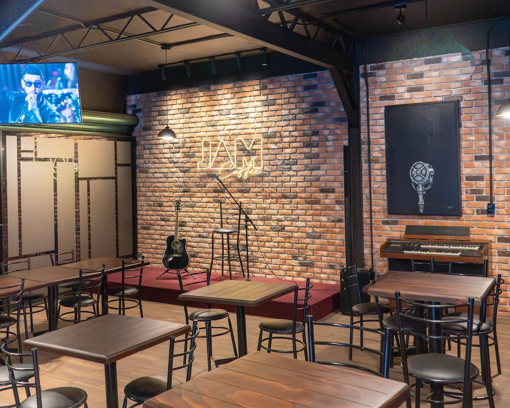
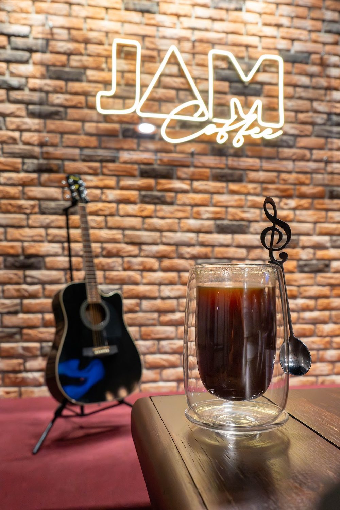
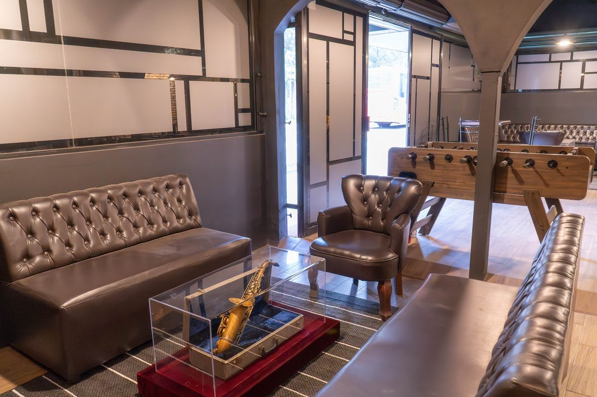
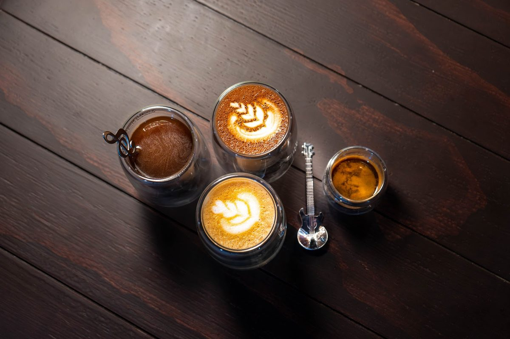

Un café de barrio con escenario: ladrillo, neón y guitarra en el muro. Café de barra, molletes para almorzar y trova un sábado al mediodía.

El muro de ladrillo no es decorado: tiene escenario, micrófono y teclado. Los sábados se arma la trova con voz y guitarra, y el resto de la semana la música va de fondo mientras se trabaja o se platica.
Si vienes por el café, pide el espresso tonic —el barista lo recomienda— y quédate un rato en la barra.
Lo que suena en la barra: café, algo para almorzar y lo dulce. Precios en barra.
La barra no publica precios en línea. Los de esta muestra se confirman en el local y se actualizan cuando el negocio reclame el sitio: ahí se cargan la carta completa, precios y fotos propias.
Mesas de madera, sofás de piel, futbolito y una vitrina con saxofón.


Se puede venir a trabajar con la laptop entre semana, a la reta de futbolito o a escuchar trova el sábado. El café se sirve en vaso de doble pared y la barra prepara todo al momento.
Hay lugar para grupos: mesas largas junto al escenario y sillones al fondo. Pregunta por el evento de la semana al 56 6363 0016.
Nte. 27-A 5440, Nueva Vallejo II Secc
Gustavo A. Madero, 07750
Sábados de trova desde el mediodía. La cartelera del mes se publica en Instagram.
Escríbenos para apartar mesa, preguntar por el evento del sábado o pedir para llevar.
Sitio de muestra · Pulse LAT
Lo armamos con información pública de tu negocio para mostrarte cómo se vería tu marca en línea. Reclámalo y lo administras tú —menú, precios, fotos y horarios—, o lo terminamos con tu información real y tu dominio.